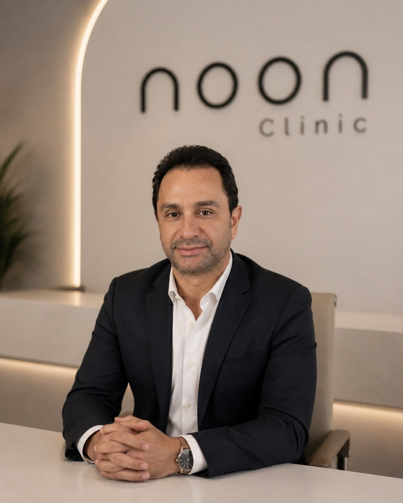
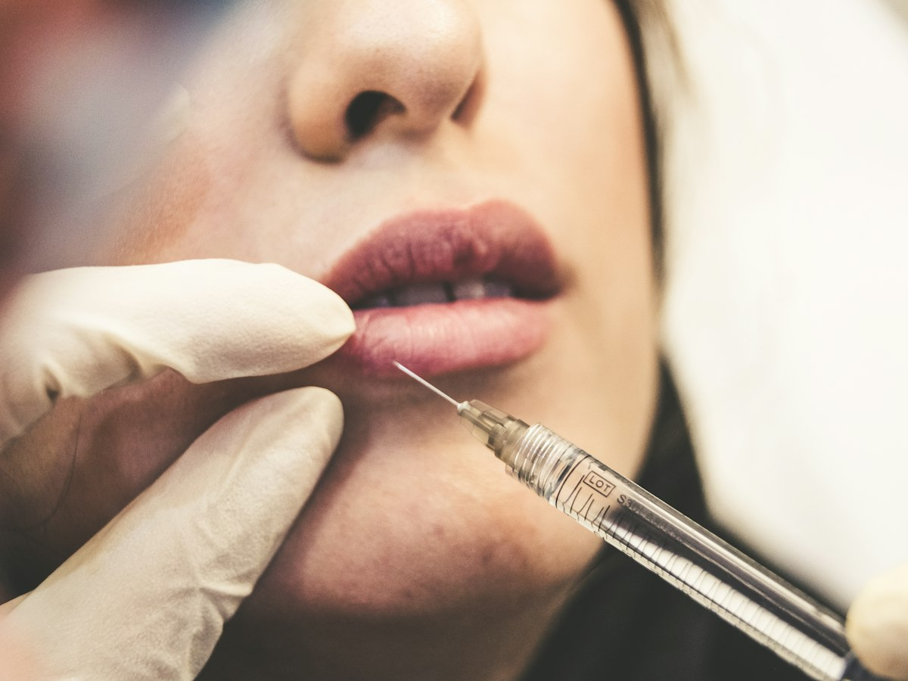

Cirugía plástica · Senos
Mamoplastia de aumento
Más volumen y mejor forma con implantes elegidos a tu medida.
El procedimiento
Cirugía que aumenta el volumen y mejora la forma de los senos con implantes mamarios.
Tamaño, perfil y ubicación del implante se deciden contigo en la valoración, según tus medidas y lo que quieres lograr.
Es para ti si
Lo que buscas
- Senos pequeños para tu cuerpo
- Pérdida de volumen tras embarazo o baja de peso
- Diferencia de tamaño entre un seno y otro
La indicación final la da tu cirujano en la valoración.
Recuperación
Paso a paso
Sales con brasier posquirúrgico. Necesitas acompañante.
Reposo relativo y primer control.
Vuelves poco a poco a tu rutina.
Los implantes se asientan y toman su forma natural.
Tiempos de guía. Tu cirujano te da los exactos.
Antes de decidir
Todo sobre la mamoplastia de aumento
Aumento de senos, mamoplastia o implantes: los nombres con que se busca
Mamoplastia de aumento, aumento mamario, aumento de senos o “ponerse implantes”: es la misma cirugía. En inglés se busca como breast augmentation. Si vives en Estados Unidos, te puede servir nuestra guía de aumento de senos en Medellín desde Estados Unidos, que también está en inglés. Según la Sociedad Estadounidense de Cirujanos Plásticos (ASPS), se hace para tener senos más grandes, para recuperar el volumen que se pierde con un embarazo o al bajar de peso, o para mejorar la diferencia de tamaño entre un seno y otro.
¿Silicona o solución salina? ¿Encima o debajo del músculo?
La FDA, que regula los implantes en Estados Unidos, aprueba dos tipos: los de solución salina, una cubierta de silicona llena de agua salada estéril, y los de gel de silicona. Los dos vienen en varios tamaños, con cubierta lisa o texturizada. Según la ASPS, el implante puede ir debajo del músculo pectoral o encima de él, detrás del tejido del seno, y la incisión puede hacerse en el borde de la areola, en el pliegue bajo el seno o en la axila. La elección depende del implante, del aumento que buscas y de tu cuerpo. No se escoge por catálogo: lo define tu cirujano contigo en la valoración.
Cuándo conviene otra cirugía, o sumar una
El implante da volumen, pero no levanta. La ASPS explica que el aumento no corrige un seno muy caído y que a veces hace falta un levantamiento, en la misma cirugía o en otra.
- Si el seno está caído, se evalúa la mastopexia, con implantes si además quieres volumen o solo con tu tejido.
- Si después de los embarazos también cambió tu abdomen, se evalúa un mommy makeover.
- Si ya tienes implantes y quieres otro tamaño o retirarlos, se evalúa el recambio de implantes.
En la valoración te decimos qué tiene sentido para ti.
Para quién no es
Según la ASPS, puedes ser candidata si tienes buena salud, tus senos ya terminaron de desarrollarse y tus expectativas son realistas. Por eso, por ahora no es para ti si:
- Estás embarazada o lactando.
- Tus senos todavía están en desarrollo.
- No estás en buen estado de salud.
- Esperas que el implante levante un seno caído.
- Lo haces por otra persona. La ASPS lo dice claro: es una decisión tuya.
Si planeas un embarazo, cuéntaselo a tu cirujano en la valoración.
Riesgos que debes conocer
Toda cirugía tiene riesgos, y esta también. La ASPS menciona, entre otros:
- Riesgos de la anestesia, sangrado, hematoma e infección.
- Acumulación de líquido (seroma).
- Tejido cicatricial duro alrededor del implante (contractura capsular).
- Fuga o ruptura del implante, o que quede mal ubicado.
- Cambios en la sensibilidad del pezón o del seno, y dolor persistente.
- Arrugas en la piel sobre el implante y mala cicatrización.
- Un linfoma asociado a los implantes (BIA-ALCL) u otros cánceres muy raros en la cápsula que rodea el implante.
- Posibilidad de una cirugía de revisión.
Antes de decidir te los explicamos uno a uno y firmas un consentimiento informado.
Cómo prepararte y qué controles vas a necesitar
Antes de la cirugía te haces los exámenes previos y revisas tus medicamentos con tu especialista: la ASPS recomienda dejar de fumar y evitar la aspirina y ciertos antiinflamatorios, porque aumentan el sangrado. El ayuno y qué llevar están en tu proceso. Sales con brasier posquirúrgico y necesitas un adulto que te lleve a casa y se quede contigo la primera noche. La primera semana es de reposo relativo, con tu primer control. Con los años, los implantes piden revisión: la FDA explica que no se puede predecir cuánto dura un implante y, si son de silicona, recomienda controles periódicos para detectar una ruptura que no da síntomas. Tu médico te dice si con ecografía o con resonancia.

Tu especialista
Dr. Fernando Ruiz
Cirujano plástico
Tu valoración de mamoplastia de aumento es con el especialista que te opera.
Conocer al especialistaPreguntas
Sobre mamoplastia de aumento
¿Cómo se escoge el tamaño?
Según el ancho de tu tórax, tu piel y el resultado que buscas. El objetivo es que se vea proporcionado.
¿Podré lactar después?
En la mayoría de los casos, sí. Cuéntale a tu cirujano si planeas un embarazo.
¿Los implantes hay que cambiarlos?
No tienen fecha de vencimiento fija, pero requieren control periódico y pueden necesitar recambio en algún momento.
¿Cuántos días de incapacidad necesito para un aumento de senos?
Aproximadamente una semana. Entre la segunda y la cuarta semana vuelves poco a poco a tu rutina, y los implantes se asientan y toman su forma entre los 3 y los 6 meses. Tu cirujano te confirma los tiempos de tu caso.
¿Cuándo puedo volver a hacer ejercicio después del aumento de senos?
El ejercicio vuelve de forma gradual y solo cuando tu cirujano lo autoriza en un control. Hasta entonces, la ASPS recomienda tomarlo con calma, porque en los primeros días puede haber sangrado en el espacio donde queda el implante.
¿Me puedo hacer mamografías si tengo implantes?
Sí. La FDA recomienda avisarle al personal que tienes implantes antes del examen, porque puede que necesiten tomar más imágenes que en una mamografía normal.
¿Los implantes mamarios dan cáncer?
La FDA describe un linfoma asociado a los implantes, el BIA-ALCL: es un cáncer del sistema inmune, no del tejido del seno, y aparece con más frecuencia con implantes texturizados. La ASPS menciona además otros cánceres muy raros en la cápsula que rodea el implante. Si notas hinchazón o dolor que no se quita cerca del implante, consulta a tu cirujano.
Blog
Lecturas relacionadas.

Cirugía plástica en vacaciones de verano en Colombia, sin sorpresasLos niños salen del colegio, tú consigues los días libres en el trabajo, y el viaje a Colombia ya casi está armado. La pregunta es si ese mismo viaje alcanza también para una cirugía.Leer ¿Operarme en Colombia viviendo en Estados Unidos?Lo que conviene saber antes de pedir las vacaciones, comprar el tiquete y avisarle a la familia.LeerTambién en senos
Otras cirugías
- MastopexiaLevanta y reafirma el seno, con o sin implantes.3 a 5 horas · Recuperación 2 a 3 semanas
- Mamoplastia de reducciónSenos más livianos y proporcionados; alivio de espalda y cuello.3 a 4 horas · Recuperación 2 a 3 semanas
- Recambio o retiro de implantesActualiza, cambia de tamaño o retira tus implantes con seguridad.2 a 4 horas · Recuperación 1 a 2 semanas
- GinecomastiaPecho masculino más plano y definido.1 a 2 horas · Recuperación 7 a 10 días
noon Clinic
Mamoplastia de aumento
Todo empieza con tu valoración presencial en Medellín: el Dr. Fernando Ruiz revisa tus medidas y tu piel, te dice si basta con el implante o conviene también un levantamiento, y recibes tu plan por escrito.